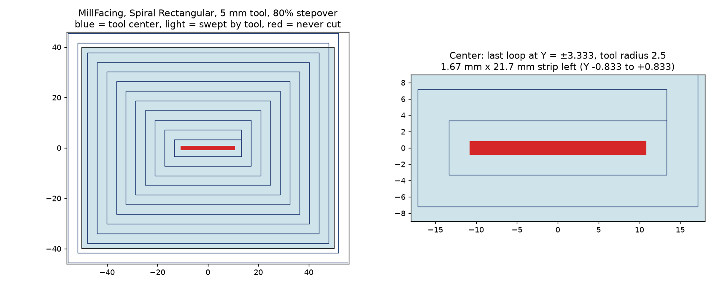

Tried against upstream main e95a31c3119: tried

Reproduced: Yes
Path/Base/Generator/spiral_facing.py. It dates back to the facing reimplementation (#24367). The fix is two lines.The reporter's build is 9946038aa. spiral_facing.py and MillFacing.py are byte-identical between that build and current main e95a31c3119, so the reporter's saved toolpath is what main generates.
The reporter's file has a MillFacing op with these settings:
The stock is 100 × 80 mm, centered on the origin. I read the G-code stored in the file and swept a 5 mm disc along every feed move on a 0.05 mm grid over the stock top.
| Loop half-widths in Y | 45.5, 41.67, 37.83, … 7.17, 3.333 (step 3.8333) |
| Uncut region | X −10.80 … +10.80, Y −0.80 … +0.80, about 35.7 mm² |
| Expected from geometry | Y ±(3.333 − 2.5) = ±0.833; X ±(13.333 − 2.5) = ±10.833 |
This matches the sliver in the reporter's screenshot. The Lead In/Out dressup only adds the arcs at the start and end, so it isn't involved.
In spiral():
starting_inset = tool_radius - stepover_dist # -1.5
limiting_half = min(primary_length, step_length) / 2.0 # 47
total_radial_distance = limiting_half - tool_radius - starting_inset # 46 (should be 43)
number_of_intervals = math.ceil(total_radial_distance / stepover_dist) # 12
actual_stepover = total_radial_distance / number_of_intervals # 3.8333
...
initial_offset = -tool_radius + stepover_dist # +1.5
The adjustment is meant to land the last loop at offset limiting_half - tool_radius (44.5), where the tool edge just reaches the center. The loops start at initial_offset (+1.5), but the distance is measured from starting_inset (−1.5), the same value with the opposite sign.
The result: loop 11 lands at offset 43.667, which is 0.833 short. Loop 12 would be at 47.5, past the center, so the isGreaterEqual(t0, t1) check ends the spiral. Nothing ever cuts the band between them.
With the fix, the distance is 43, divided into 11 intervals: actual_stepover = 3.9091 and the last loop sits at exactly 44.5.
At stepovers below about 70%, the loop keeps going past the target, so no material is left. The adjusted stepover is still not the value the docstring promises.
I re-implemented the offset logic in plain Python and ran it for a 5 mm tool at every stepover from 10% to 100% in 5% steps, with half-widths from 3 to 99.5 mm in 0.5 mm steps (3686 cases):
| Cases with an uncut center strip | Stepovers affected | |
|---|---|---|
| Current main | 834 | 75, 80, 85, 90, 95% |
| With the fix | 0 | – |
- starting_inset = tool_radius - stepover_dist
+ initial_offset = stepover_dist - tool_radius
limiting_half = min(primary_length, step_length) / 2.0
- total_radial_distance = limiting_half - tool_radius - starting_inset
+ total_radial_distance = limiting_half - tool_radius - initial_offset
Then remove the later initial_offset = -tool_radius + stepover_dist line.
A regression test in TestPathFacingGenerator should use 80% stepover on a rectangle like this one. It should check that the last loop's offset from the boundary equals limiting_half - tool_radius, or simply that the swept area covers the center.
The file was not opened in a live FreeCAD for this check. The evidence is the toolpath saved in the reporter's file plus the generator source on main, which is identical to the reporter's build.